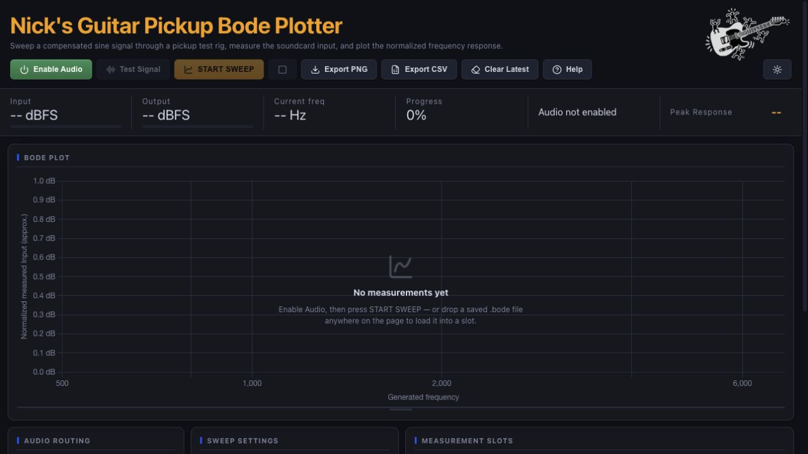

01 / FREQUENCY
Guitar Pickup
Guitar Pickup
Bode Plotter
Sweep a compensated sine signal through your test rig, plot the normalized response, compare slots, and export clean plots or raw CSV data.
Open Bode Plotter